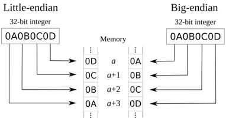

Chapter 2 信息的表示和处理¶
1 信息存储¶
大多数计算机使用8位的块，或者字节(byte),作为最小的可寻址的内存单位，而不是访问内存中单独的位。内存的每个字节都有一个唯一的数字来标识，称为它的地址(address)。
十六进制表示法¶
一个字节由8位组成。在二进制表示法中，它的值域是00000000_2\sim 11111111_2。如果看成十进制数，它的值域是0_{10}\sim 255_{10}。
这两种符号表述法对于描述位模式来说都不是非常方便。
- 二进制表示法太冗长；
- 十进制表示法与位模式的相互转化很麻烦。
替代的方法是，以16为技术，以十六进制(hexiademical)数来表示位模式。

字和数据大小¶
每台计算机都有⼀个字⻓(word size)，标明指针数据的标称大小(norminal size)。字⻓决定的最重要的系统参数就是虚拟空间的⼤⼩。对于⼀个字⻓为w位的机器⽽⾔，虚拟地址的范围为0\sim 2^w−1。
C语言支持整数和浮点数的多种数据格式。下表为C语言各种数据类行分配的字节数。

寻址和字节顺序¶
考虑一个w位的整数，其位表示为[x_{w-1}, x_{w-2}, x_1, x_0]，其中x_{w-1}是最高有效位(the most significant bit)，而x_0是最低有效位(the least significant bit).
假设w是8的倍数，这些位就能被分组成字节，其中最高有效字节(the most significant byte)包含位[x_{w-1}, x_{w-2},..., x_{w-8}]，而最低有效字节(the least significant byte)包含位[x_7, x_6,..., x_0]，其他字节包含中间的位。
有些机器选在在内存中按照从最低有效字节到最高有效字节的顺序存储对象，这种方式称为小端法(little endian). 最高有效字节在前面的方式，称为大端法(big endian).

Note
大多数Intel兼容机都只用小端模式。